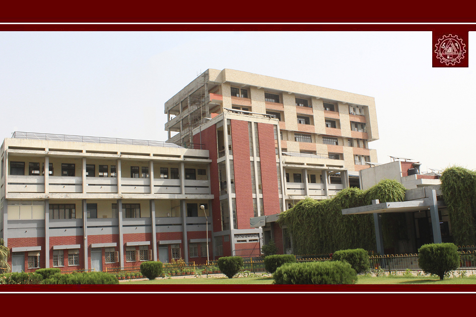

About Don Bosco Institute of Technology:
Don Bosco Technical Institute is a placement driven and skill training Institute. It is a Christian minority Institute established in 1971 and is owned by Don Bosco Group. Don Bosco Group is spread across 134 countries having thousands of training institutes worldwide and over 125 locations in India catering to skilling and employablity needs of the youth.
Our students' motto is 'Learn a Trade, Earn a Living'. The institute intends to mainstream the youth into the formally organized job market through market driven skill development interventions. The course modules are designed carefully with industry inputs to keep in tune with changing demands of the market. Don Bosco Technical Institute opens new horizons of opportunity for the young people of North India.
Unique in its Training programmes, training methods and goals, the institute is strongly rooted in the philosophy of St. John Bosco, "Passion for Youth!" and is committed to acompany the young people in their journey to self-realization and fulfillment. We too share in their struggles and achievements by being with them at every step as mentors and guides to the less privileged Youth.